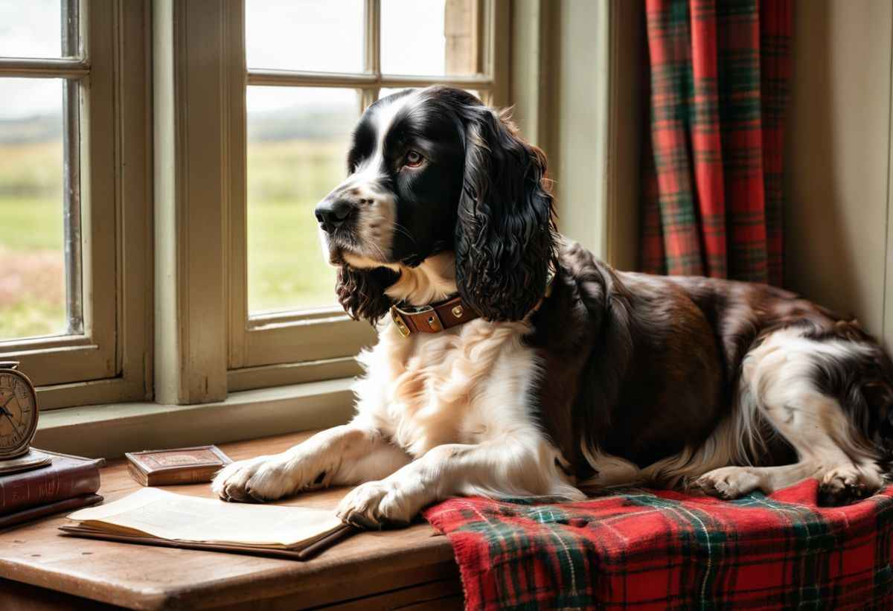
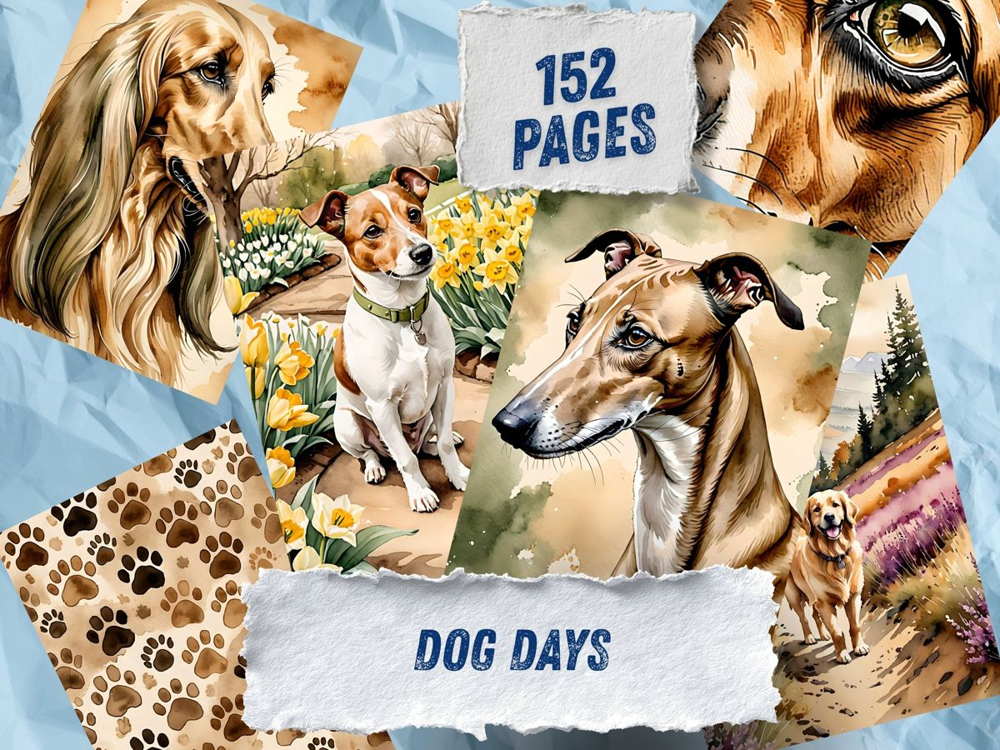
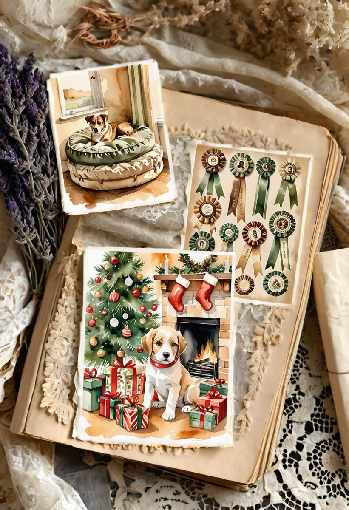
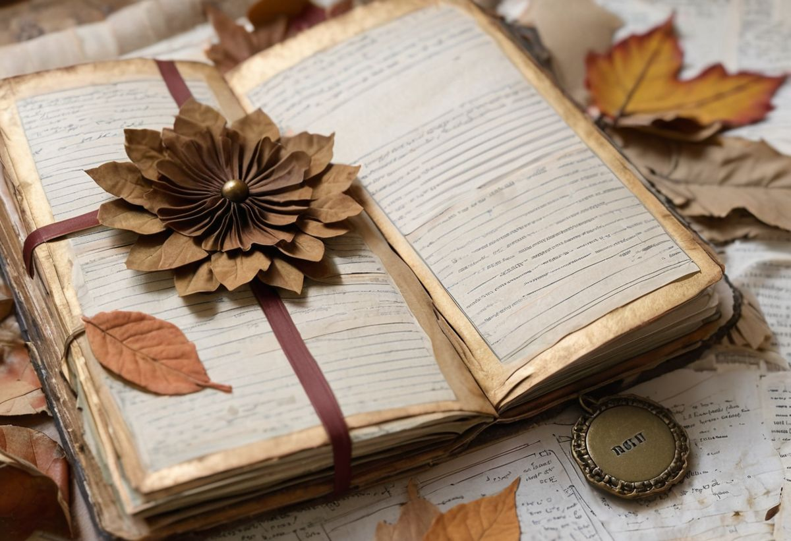

Some journals are about flowers, and some are about the small brown eyes that watch you from under the table while you glue things. If your heart belongs to a dog — this theme was painted for you.
We call it Dog Days in the studio: a collection built like a vintage kennel-club scrapbook. There are prize rosettes with pleated ribbons in olive and cream, portrait medallions of solemn spaniels and cheerful terriers, aged certificate papers, and ribbons that look like they have been pinned to a corkboard since 1934. It is affectionate without being cartoonish — the dogs here are painted like family members, because that is what they are.
The palette: worn leashes and old ribbons
Every shade below comes straight from the pages — muted, warm, and very forgiving to work with.

Six ways to journal your dog
1. Award your champion. Cut out a rosette and give your own dog a prize — "Best Napper, Autumn Division", "Champion of Stolen Socks". Write the citation underneath in your most official handwriting.
2. A page per year. One rosette, one photograph, one line about what this year of their life was like. It becomes a keepsake faster than you expect.

3. The kennel-club ledger. Use the aged certificate papers as journaling spots: vet visits, favourite walks, the names they actually answer to.
4. Ribbon tails as page markers. The long pleated ribbons, cut out and glued to the page edge, make beautiful bookmarks — let them hang out of the journal like prize tags.
5. A memorial page, gently. For the dogs we have said goodbye to: one portrait medallion, one ribbon, and all the room you need. This theme carries that weight with dignity.
6. Mix with plain kraft. The rosettes are detailed, so give them calm neighbours — kraft paper, old book pages, a charcoal border. The medals will do the talking.

Start with one spread
Print two or three rosette pages, pick your calmest cream paper for the base, and begin with idea number one — every dog deserves a prize, and yours has been waiting.

More quiet paper worlds live in the journal — come wander when the glue is drying.